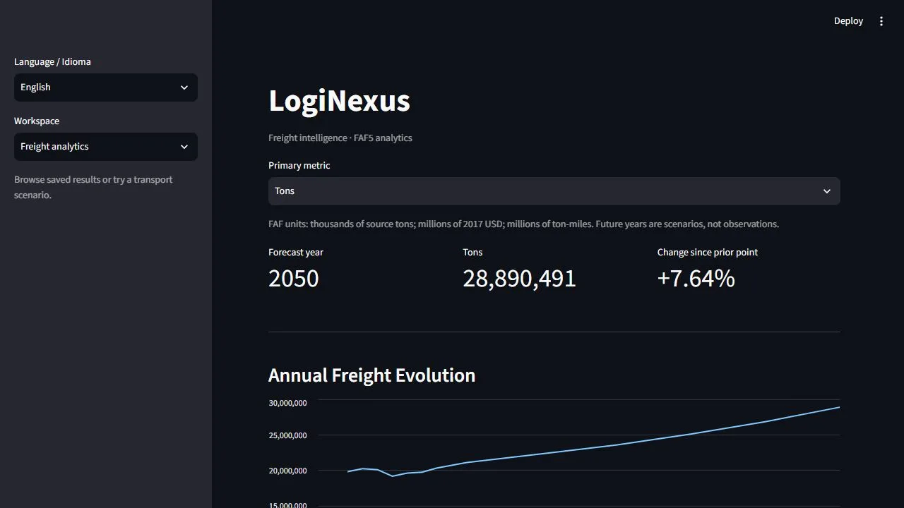

LogiNexus freight intelligence
Freight analytics for the US and Brazil: a 97.6-million-row pipeline, forecasting, optimization and routing.
97.6Mrows through the medallion pipeline

- Decision it supports
- Where, by which mode and on which route to ship, and what volume to expect.
- Who uses it
- Logistics planning, freight sales and transport operations.
- What an error costs
- A wrong forecast means idle capacity or shortage; a route that ignores truck limits means fines and delays.
- How it creates value
- Brings US and Brazilian sources into a trusted 97.6-million-row history, with forecasts tested on held-out years, allocation optimization and truck-aware routing.
- Risks and limits
- The free demo takes time to wake up; forecasts are evaluated baselines, not volume promises.
Problem
Freight planning needs volumes by corridor and mode, forecasts that hold up on years they were not trained on, and allocations that respect capacity, from sources with different units and gaps.
Solution
A medallion pipeline over the US Freight Analysis Framework and Brazilian rail, road, water, air and pipeline sources, evaluated forecasting baselines, a transport optimizer, truck-aware routing and a documented read-only API.
How it works
- Bronze, Silver and Gold layers with staged file replacement and source hashes.
- Forecasts evaluated with expanding windows and reserved test years.
- Routing with separate car and truck engines that respect dimensions and weight.
Results
| 97.6M | rows processed from source CSV to Gold |
| 5 | Brazilian transport modes with observed histories |
| 510 | observed cabotage port pairs, all 98 reviewed origins |
Limits
The free demo host sleeps after 15 minutes; the first visit can take about a minute.
Stack
Python, Polars, DuckDB, FastAPI, Docker